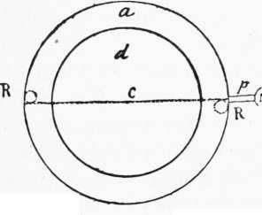
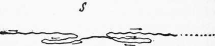

(2) Interpretation Of These Rules
Description
This section is from the book "The Psychic Life Of Insects", by E. L. Bouvier. Also available from Amazon: The Psychic Life of Insects.
(2) Interpretation Of These Rules
Such are the important rules established by Piéron and Cornetz. It remains now to interpret them.
What determines the direction of the explorer is the object of going; but how can an explorer preserve this direction in the course of a journey which cannot be regular, on account of obstacles and the necessity of searching? How, especially, is it capable, on going from the nest, to keep the same direction every time it 'starts toward a definite point?
The sense of angles permits it to preserve its direction. Let us note first that in leaving the nest an explorer always goes in a straight line. Experience taught it that it can find very little in the neighborhood of the nest and that its search, to be fruitful, must extend farther. This straight line gives a general direction to the journey. If the insect is going to a known spot it will only have to preserve the direction, oscillating more or less, according to custom. We can, ourselves, up to a certain point, keep a direction without knowing the surrounding objects.
The phenomena are ordinarily more complex. The going path is not always direct ; it often takes the form of a broken line whose angles approach more or less a right angle. Some experiments of Lubbock teach us what happens then. A large horizontal disk (Figure 12, d), turned on a pivot in its center, was prepared. It was contiguous to a ring, a, situated in the same plane, and which also turned, but independently. The whole formed a circular table. At the end of the diameter of the table was a narrow bridge, p, which led to an artificial formicary, N, of Lasius niger; at the other diameter was <a reservoir, E, which contained the larvae of this species. The ants followed the diameter in order to go to the larvae. If one turned the disk while they were busy, they turned themselves at an equal angle, but in the contrary sense if they were to preserve their direction and reach the reservoir. And it was not the attraction of the larvae which guided them, for, if the table was turned 180 degrees, they turned as much, which led them to the end of the diameter but not to the reservoir, which brought them now to the bridge at R'. So the ant noticed the angular deviations. It had what Cornetz calls the sense of angles, and P. Bonnier the sense of attitudes, which permits it to correct deviations and to march parallel to its original direction. What is the nature of that sense? We do not know. With the vertebrates it has for its seat the labyrinth of the ear ; but the ants are deprived of this organ, the role of which is perhaps filled, we think, by the faceted eyes, which are very sensitive to displacements.
Fig. 12.-Experiment of Lub- t bock. (See text.)
Cornetz does not deny to the 'ants the sense of angles, but he thinks that these insects can preserve their direction, when it is interrupted, just as well through a succession of angular sensations, and he offers as proof of this fact that a Messor "appeared insensible" to the slight rotations which he gave a specimen while it was absorbed in choosing its food. It did not rectify the angles, and left for home in the right direction when it had grasped its morsel. But is it very certain that the ant had not noticed the rotary movement, and was this not perceived in spite of the care which it was devoting to the choice of its food? Evidently it acted automatically, but was this automatism greater than that of the Lasius of Lubbock upon its disk? And the Saharan guide, of whom Cornetz (1910) speaks-did he not automatically preserve his direction in the desert although absorbed in his chase of gazelles? We believe that the ants are capable of noticing and retaining their angular displacements without any interruption, and consequently are capable after each angle to take a direction parallel to the preceding. This is not the idea of Cornetz, who concludes from his experiments that "the ant can maintain a special direction without need of associating it with a previous position.
How is the direction taken on issuing from the nest? Cornetz arrives at the same conclusion, which appears to him to be the essential result of his researches, when he studies the capital phenomenon of orientation to learn the direction which an exploring ant takes on starting out from its nest toward an unknown point, a place of provender, or an old nest. And he bases his thesis on the following observation. A colony of Catagly-phis had abandoned its home for another one situated forty meters to the north. The new nest having been broken up some days after, Cornetz observed that "from the heap of rubbish there issued some large workers which set out without hesitation toward the south, carrying larvae toward their old nest." These ants "retain, then, ' ' he adds, 6 ' for several days, the direction of the old nest, and that, independently of the position of the sun at the moment of the disturbance, as well as a visual, olfactive, or tactile sense of the ground between the two nests. ' ' An observation of Wasmann1 seems to confirm Cornetz's views. Some sanguinary ants, Formica sanguinea, had established themselves in a new nest from which the top turf was removed after some days, and a certain number of workers, seizing the larvae, fled singly toward the old nest across plants and other obstacles which separated them from it to a distance of eighteen meters. Odor could have played no part in this migration, for rain had completely washed the soil, and Wasmann thinks that the ants were guided to their ancient nest by the visual memory of places.
Wasmann ?s conclusion seems better justified than that of Cornetz, but the visual images of the topographic memory should not be confounded with sensations. One can distinguish between two lights of different intensities without perceiving the image of the objects made clear by these lights. But there is no doubt that these differences of light play a part in the orientation of ants. Lubbock has observed that his Lasius niger oriented itself by the light of a candelabrum placed near the table. Those accustomed to this light behaved like those we have mentioned (page 260), but they did not reestablish the angles any longer, and walked in the opposite way, with or without the rotation of the disk, when the candelabrum was placed at another point on the border of the table. They oriented themselves toward the light. The following experience of Santschi (1911) is still more significant. An explorer of M essor came back to its nest (Figure 13, N) toward evening, lighted at the left by the sun. On arriving at a shaded place where it continued its journey directly, the insect received the sun's rays reflected by a large mirror situated at the right. It immediately changed its direction, and walked in such a way that the rays from the mirror struck it from the left. It oriented itself by the rays from the mirror just as it had done by the direct rays of the sun.
1 E. Wasmann, Die psychischen Fahigkeiten der Ameisen, 1899.
Fig. 13.-Two deviations made by an explorer of M essor when, crossing a shaded spot to return to the nest N, she receives from the right the sun's rays reflected by a mirror. (After Santschi).
Continue to: